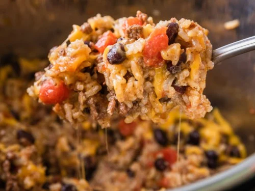

Homemade Chipotle Bowls

Ground Beef Chipotle Bowls
If you're tempted to go out to get Chipotle, consider making this simple and healthy option. With just
a few ingredients, you'll have Chipotle in the comfort of your own home!
Ingredients
- 1lb ground beef
- 1/4 cup green salsa
- 1 cup brown rice
- 1 can no sodium black beans
- Monteray jack cheese
- Salt
Optional
Steps
- Start boiling your rice according to box instructions.
- Place black beans in a small pot to simmer.
- Add ground beef to a pan and turn to medium-high heat.
- Once the beef has lost all it's pink color, add your green salsa and continue cooking on
high heat
- When the beef has begun browning and criping at the bottom of the pan remove from heat.
- In a bowl layer your rice, cheese, beans, and beef.
- Add your optional queso and hot sauce.
- Serve and enjoy with tortilla chips.
Back